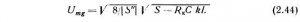

https://stilin.ru/yadernyy-rezonans/569-generator-slabyh-kolebaniy-avtodinnyy-spinovyy-detektor.html
Впервые этот спиновый детектор был применен Е.К. Завойским для наблюдения ЭПР в 1944 г., а затем после открытия ЯМР и для регистрации сигналов, обусловленных ядерным магнетизмом. В основе принципа действия генератора слабых колебаний как спинового детектора лежит исключительно сильная зависимость амплитуды и фазы генерируемого им напряжения от изменения параметров контура, включенного в сеточную цепь генераторной лампы или между соответствующими электродами транзистора.
Ранее было показано, что при ЯМР изменяются сопротивление [ΔZ] и тангенс угла потерь или Δφпараллельного колебательного контура (см. (2.13) и (2.16)). В генераторе слабых колебаний (рис. 2.19) это вызывает изменение его амплитуды и частоты, что после соответствующего детектирования позволяет получить сигналы поглощения или дисперсии.
По существу генератор слабых колебаний (автодин) является генератором, работающим по схеме "индукционной трехточки". Его эквивалентная схема (рис. 2.20, а) подобна схеме классического генератора Гартлея (рис. 2.20, б), теория работы которого хорошо разработана. Хотя в принципе автодин позволяет получить как сигнал поглощения V(χ''), так и сигнал дисперсии V(x'), мы рассмотрим лишь возможность получения первого, поскольку в большинстве случаев на практике используются сигналы ЯМР поглощения.
Из теории работы генератора Гартлея известно, что устойчивые собственные колебания в таком генераторе возникают, если коэффициент обратной связи k превышает некоторую критическую величину kкр, т. е. если
где R0, L и C — параметры катушки и конденсатора параллельного колебательного контура; Rк — его эквивалентное сопротивление; S — крутизна характеристики лампы генератора. Зависимость амплитуды переменного напряжения на сетке генератора (Umg) от коэффициента обратной связи (k) для «мягкого» режима самовозбуждения генератора представлена на рис. 2.21.
Известно, что при ядерном магнитном резонансе, когда наблюдается сигнал поглощения,
где ξ — коэффициент заполнения, ΔRк равно:
Ho уменьшение эквивалентного сопротивления контура Rк' в результате ЯМР на ΔRк приводит в соответствии с (2.39) и (2.40) к увеличению критической величины коэффициента обратной связи на Δkкр. При этом весь график зависимости амплитуды колебаний напряжения на сетке генераторной лампы (на контуре) Umq от коэффициента обратной связи k на рис. 2.21 смещается вправо (пунктирная линия), и для установленной в автодине обратной связи k0 амплитуда колебаний генератора уменьшится на величину ΔUmg. Из графика также видно, что ΔUmg за счет ЯМР будет тем больше, чем ближе к kкр была установлена обратная связь автодина k0. Следовательно, для повышения чувствительности спинового детектора необходимо работать по возможности ближе к порогу срыва колебаний генератора. Более обоснованное заключение о работе автодинного детектора можно сделать на основе несложного теоретического рассмотрения. Из квазилинейной теории работы лампового генератора известно аналитическое выражение его колебательной характеристики, записываемое в виде
где Ima — амплитуда первой гармоники анодного тока; S и S'' — крутизна ламповой характеристики и ее вторая производная. Для описания режима жесткого самовозбуждения здесь следовало бы взять еще один нечетный член разложения в ряд Тейлора, а именно член, содержащий U5mg. Средняя крутизна характеристики лампы, учитывающая нелинейность, в этом случае выразится следующим образом:
Нелинейность ламповой характеристики учитывается здесь тем, что S зависит от амплитуды колебательного напряжения Umg, которое подается на сетку лампы, причем эта зависимость проявляется тем в большей степени, чем больше напряжение Umg, т. е. чем больший участок ламповой характеристики используется. Известно также, что эквивалентное сопротивление контура лампового генератора определяется его активным сопротивлением и отрицательным сопротивлением, вносимым в контур за счет обратной связи генератора
где k — коэффициент обратной связи (в случае индуктивной обратной связи, например, он выражается через коэффициент взаимоиндукции M следующим образом: k=M/L). Так как dIa/dUg = S, а для учета нелинейности вместо S следует брать S, (см. (2.42)), то выражение для эквивалентного сопротивления примет вид
Решив это уравнение относительно Um дли установившегося режима колебании, тогда Rк' = 0, получим
Если проанализировать при данных условиях уравнения (2.43), то нетрудно увидеть, что наличие установившейся конечной амплитуды будет иметь место лишь при S'' < 0. Именно этот случай и осуществляется на практике при наличии мягкого режима генератора. Таким образом, для рассматриваемого нами случая амплитуда собственных колебаний будет

(так как S'' - [S'']). Будем считать, что поглощение энергии контура в результате ЯМР эквивалентно изменению его добротности за счет увеличения активного сопротивления Rк. Тогда для определения чувствительности схемы к поглощению энергии колебательного контура генератора в зависимости от режима работы генератора последнее выражение следует продифференцировать по параметру
Преобразуем это выражение, чтобы получить зависимость от амплитуды колебаний контура Umg. Если теперь умножить числитель и знаменатель правой части на √8/[S"] и согласно (2.44) произвести замену в знаменателе на Umg, то получим

Определив далее из формулы (2.44) коэффициент обратной связи k и подставив его в последнее выражение, после несложных преобразований получим
Знак минус в правой части этой формулы указывает на то, что с увеличением поглощения в контуре генератора амплитуда его колебаний будет уменьшаться. Это уменьшение колебаний будет тем больше, чем ниже уровень собственных колебаний генератора Umg, т.е. чем ближе k0 → kкр или чем ближе генератор работает к порогу срыва колебаний. При этом, конечно, уменьшать Umg слишком сильно нельзя, так как всегда имеется некоторая нестабильность режима генерации, в связи с чем работа генератора будет неустойчивой. Кроме того, при уменьшении Umg уменьшается поле H1 и при H1 < H1опт = 1/y√T1T2* чувствительность спинового детектора к ЯМР начинает падать. Из формулы (2.45) можно определить изменение амплитуды напряжения на контуре (или сетке) Umg за счет ЯМР. Для этого запишем (2.45) в виде
отсюда с учетом (2.41) получим
Автодинный спиновой детектор является довольно простым устройством для наблюдения ЯМР и может быть изготовлен в лабораторных условиях студентами старших курсов как в ламповом, так и в транзисторном исполнении. Благодаря своей простоте и достаточно высокой чувствительности генераторы слабых колебаний широко применялись различными исследователями в первые годы развития радиоспектроскопии и успешно используются в настоящее время в ЯМР-спектроскопии широких линий (при исследовании твердых тел, жидких кристаллов, явлений адсорбции и т.п.). Применение же автодинов в радиоспектроскопии высокого разрешения сильно ограничено из-за некоторых присущих ему недостатков, наиболее существенными из которых являются следующие. Выше было показано, что для достижения наибольшей чувствительности автодина необходимо работать с малыми амплитудами напряжения генератора Umg, т. е. у порога срыва колебаний. Такие же требования к спиновому детектору предъявляются и при исследовании жидкостей с большими временами релаксации в высокооднородном магнитном поле H0. В этом случае оптимальное значение поля H1опт-(Т1Т2*)-1/2 мало и сигнал ЯМР может наблюдаться лишь при небольших Umg. Однако, как уже отмечалось, работа автодинного генератора в таком режиме неустойчива. Вторым недостатком автодина является то, что генераторам такого типа, работающим фактически в режиме регенерации, присуще явление затягивания частоты. Оно обусловлено наличием в таком генераторе двух резонансных систем — колебательного LС-контура и спиновой системы, которая при ЯМР также может рассматриваться как высокодобротный второй колебательный контур. Между этими контурами существует индуктивная связь. Из теории работы таких систем со связанными контурами известно, что если коэффициент связи между контурами k ≥ kкр = (Q2)-1 где Q2 — добротность второго контура, то появляется неоднозначность резонансной частоты. При исследовании жидкостей с очень узкими резонансными линиями Q2 велика и kкр слишком мал, а поэтому трудно выполнить условие k ≤ kкр, чтобы не допустить неоднозначность резонансной частоты (явление затягивания частоты).